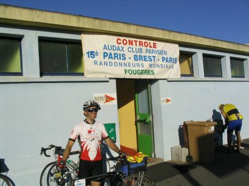

PBP 1999
Having completed many centuries, and
twice riding the 320 km Hairshirt, I was looking for other challenges for
distance riding and when I first heard about Randonneuring in 1991, became
interested in trying these rides. I completed my first 200 in 1992, and
completed my first “Super Randonneur” series the next year. In 1995, I attempted
to qualify for PBP, but while riding a 400 km, I suffered
Achilles tendonitis on both ankles. Even after 2 weeks of rest and
physiotherapy, I had to drop out of the 600.
The next few years were somewhat fallow, but once again in 1999, I attempted to qualify for PBP. Training for any
long ride is always a challenge, and that year my work schedule played havoc
with my training, and I while I completed the first 200, I had to abandon my
first attempt on a very hilly 300.
I carried on and completed the 400 km and 600
km brevets successfully (both quite hilly) and then managed to make up the
missing 300 km as a solo effort. One of the extra challenges of qualifying for
PBP in Canada is that all qualifying rides must be completed before the end of
June! I did an extra 200 km brevet, which included some tough climbs in the area
near Collingwood. Even still, I felt vastly under-trained and went to France
with great anticipation and some apprehension.
For me, the most exiting time was
at the beginning of the ride. There were so many 90 hr starters that they let us
off in 4 waves, and I did not get rolling until 10:30pm. As far as the eye could
see, there was a ribbon of red taillights off the front. If one glanced behind,
one could see a trail of headlights. The country roads were full of cyclists,
lighting up the road. One could hear the buzz of gears and generators. By
sunrise I had covered over 140 km and reached the first stop, which was a food
stop only.
The heat of the day took its toll and by the afternoon I was feeling
sick and not interesting in eating. I struggled through another night of riding
before reaching my sleep spot around 1:30 am, having covered over 450 km at an
average speed much slower than I had anticipated. Having arrived at the hotel I
had booked, I encountered further delays securing my room, and did not get to
bed until 2 am. Then I overslept and felt that I would not make the next
checkpoint in time. Never the less, in spite of the sense that I would not
complete PBP, I carried on anyway. I noted that I had about 80km to the next
control in Carhaix, and knew I could make an average pace of 20 kph, so there
was a sight chance of making it within the 4 hours before that checkpoint
closed.
Perhaps because I had let go of any expectations of making it, I noticed
my pace picking up and my appetite came back with a vengeance. I manage to make
the next checkpoint just in time and stopped there to eat. I felt great most of
the way to Brest, and after a short rest, followed the return route. Curiously,
upon reaching Brest, with over 2 hours to spare, I knew at that moment that I
would complete the ride! It was still warm when night fell, and I had moonlight
in addition to my headlight. I arrived the same hotel much earlier than before
and managed to get a couple of hours of sleep before heading off.
During the afternoon I met an American cyclists who happened to live in the same city as my
father and knew him! Small world. That night I rode with another American. We
stopped at one of the many all-night pubs for coffee, and watched with
amazement, French rider drinking beer. With about 40 or so kilometre to go, I
got my one and only flat, after a small nail punctured the front tire. I spent
over � an hour fixing it because of a tight Kevlar bead. A French
official who I later found out was the ACP president’s daughter, drove up to ask
if everything was alright and offered to take my bags, which I gladly accepted.
I took her suggestion and rode with two others to the end. I completed the ride
in 90h 28m. Riders coming in at 92 hrs were accepted, because there had been an
error in the distance, which forced riders to go an extra 40 km!! But I am
thoroughly hooked!. In 2001, after taking a bit of a break, I did the full
series again, did a fleche, covering 482 km, and am looking forward to doing PBP
again, in 2003.
Return to the top of page.
On the first day - before the first control
As I milled around the gymnasium after finishing PBP in 1999, I had quickly decided I would do it again. And so, four years later, here I was, on the Sunday before the ride, lining up at the bike check, my bike number plate firmly attached and papers in hand, preparing to give this grand ride another go. This time I chose the somewhat more aggressive 84 hour time limit, with a start of 5 am on Tuesday. I felt I would be more than able to complete the ride in that time limit, and also liked that I would get a night's sleep before the ride. I made few if any plans about how I would ride it, other than keeping at a speed of 25-27 kph, and stopping for sleep at Loudeac and Quedillaic. I thought about trying for 75 hours but would be happy to complete the ride in the full 84.
I had ridden with Carey Chappelle and Rolf Hauckwitz from the Novotel, where many other club members were staying. It was then over to the gym to complete the registration and for those that ordered them, to pick up. There was a group photo of the Canadian contingent in from the gym (I heard we were 80 strong). Scott Chisholm had suggested going to dinner at a town about a 30 km ride from the gym, and a group of us set off, most on bike, a few in a car (which curiously arrived after we did, a story in itself). But we all had overlooked the detail that on Sundays most restaurants open late. This would have meant riding home in the dark, and it was decided to return to St. Quentin to eat. Still it was a nice ride, and the small town we visited was very quaint. It included a rather rough ride on cobbles and a hike to a ruin.
Carey, Rolf and I decided to do the Prologue ride on Monday. A mix of PBP participants and other rode a 30km circuit through the six towns that comprised St. Quentin en Yvelines. Carey and Rolf, who were doing the 90 hour time limit, made use of my room to try to get some sleep before the 10 pm start. I relaxed down in the lobby. Later I met up with Rolf, Carey and Don Magie at the local McDonald's before setting off to watch the 80 hour group start. I found a few others from the club were there as well. We watch two waves of riders rush off. Carey and Rolf head off to the gym and I wished them luck. Don and I returned to the hotel to get some sleep.
Day 1:
Philippe was riding at a bit faster pace than I was able to keep and we got separated, but met up at a gas station in Nogent-Le-Roi for a quick break and some water. It was soon daylight and I looked over the rolling landscape. Once again Phil and I became separated, but soon I was riding with a large group. It was nice to move effortlessly at 30 kph. I saw Lori Mathews and Patrick Chen in this group. We managed to hang together until the more severe hills just before Mortagne au Perche. This was only a food stop on the way out, and I stopped to refuel and top the bottles. It was then off to the first control at Villaines La Juhel. This was my favourite control in 1999, and once again this time as well. A section of narrow street is closed off, with the control on one side, and food, washrooms, and sleeping rooms on the other. Rows of crowd barriers, numbers affixed to each, served as places to lean ones bike. After getting my card signed, I went over to get top my bottle and get some food. As I ate, I noticed someone bringing numerous water bottles and food to a nearby table. A group of cyclists, most in matching yellow jerseys, sat at that table. While I was doing the ride self-sufficient, they had a full support team.
After a bit of a break, I carried on to the next control at Fougeres. I was mostly on my own at this point, but was feeling good and enjoyed riding through the French countryside. When I reached Foug�res, I was somewhat amused by the meandering route through the city, through many roundabouts. I had to look carefully at each arrow to see where to go next. But finally I arrived at the control. I saw a few familiar faces, including Philippe, and a couple I met on RM1200, John Bates and Danelle Laidlaw, riding a tandem. I rode up the hill to the area where the control office was, then rode back down to the food area to eat.

Soon after leaving the control I hooked up with the yellow jersey group I saw getting support at Villaines, who I found out were from St. Louis Mo.. One guy named Dan was quite a live wire and provided much amusement on the way to the next control at Tinteniac. The sun set not long after leaving Fougeres, and it was dark when I arrived at the next control. Once again I ate at this control. One staple I was including was soup. I ate downstairs rather that going up to the cafeteria. I felt pretty good at this point and sped along through the night to the next control at Loud�ac. I was initially riding with four Spaniards, but found their pace a bit slow and sped ahead of them. I soon noticed I was passing many others, all of them in the 90 hour group. An American fellow I was riding with mentioned that we had already passed quite a few of the 90-hour well before Tint�niac. I noticed small groups of 80 hour riders going the other way, but did not see the large group of them I had seen four years earlier. Evidently I had missed the bunch during my stop at Tint�niac. With about 20 km or so to go to the next control, I felt fatigue, sleepiness and the cold of the night. My progress slowed considerably as I struggled to keep awake, and finally arriving at the control sometime after 3 am.
Having done PBP before, I knew there would be quite a crowd, but was still shocked to see the huge throng of people there. Bikes were piled on the crowd barriers or laying on their side everywhere. I saw a large line up for food outside the cafe door. Luckily there was no line up at the control area and I quickly got my card signed. I found Philippe, Danelle and John in the cafeteria and found out our hotel booking had mysteriously vanished. On the way to Loudeac, they had stopped in Quedilliac to check on our rooms there and we were did have rooms for our return. I met up with Michael Thomson, who was about to push on. After eating, I opted for to sleep on a cot for a few hours. Since I had banked on a hotel, I had not packed a towel in the drop bag I was sharing with Rolf and Carey and was not keen on using the wet and well used towel hanging on a rail outside the showers. I made due with a change of cloths.
Return to the top of page.
Day 2 :
We rode together up through the long climb to the top of Le Traverzel. At one point there is a lovely, tree-lined climb up a winding road to the town of Huelgoat. Just before the long descent towards Brest, we stopped for a quick break and admire the view. During the break we saw the tandem team of John Bates and Danelle Laidlaw speed by, and Phil said we should have been ready to catch their wheel. After our short break, we started down the long descent. At one point Phil sped on ahead; Wim, Clyde and I stayed together to Brest. Once again I found the view of the great harbour quite stunning. There we some good climbs in the city and Wim and I wound up a bit ahead of them when I arrived at the control. I looked around for Philippe, John and Danelle, but didn't see them and went to get some food and drink.
When I returned to where my bike was parked I found Phil, Danelle and John also getting ready to leave the control. The return route is much as I remember it from before, going around the back of the harbour. For much of the way I draft the rear wheel of the tandem, with Phil behind me. It takes quite a bit of concentration and effort to stay on their rear wheel when we go downhill, and a couple of times Phil gives me a nice shove to keep in the draft. The climb up to Le Traverzel is long and steady, but our little team makes good speed. At Sizun, I point out the interesting church I saw four years earlier, with an unusual arcade off the side. The route in to Carhaix turns off just before Huelgoat and has a long straight, fast descent. Once again Phil gives me a bit of a push at one point to keep in the draft of the tandem. We stop at the control for food, and finding the main dining area busy decide to eat in the food tent outside.
It was getting dark when we left for Loudeac. The night was clear and the stars stood out quite well. Mars, which was now nearing its closest approach to the Earth in several centuries, was bright and prominent. Somewhere about half way to the next control, Phil Phil shot off ahead to find a spot for a bio-break. A few moments later the tandem team stops for the same. Somehow Phil gets separated from us and we carry on to Loudeac. At one point I caught sight of the large church near the control, but we still had nearly 20 km to go. As we near the control I suggest perhaps we pass on the hotel reservation in Quedilliac - John and Danelle have similar thoughts. Just outside Loudeac, we catch sight of Phil and ride the last couple of kilometres to the control. We arrive to find the place even more of a zoo than the night before. There was a line up to get to the sleeping area, and we decide to push on after a quick food break.
About a couple of hours later we found the second control, which seemed to be out in the middle of nowhere. We finally arrived at our hotel in Quedilliac around 5 am, a few dozen metres off the route. A few other riders followed us, thinking we were on route. We had only key in the entry code and then had access to the hotel. The rooms were clean and comfy. I savoured the shower and enjoyed a nice comfy bed - the best sleep on the whole ride.
Return to the top of page.
Day 3:
While I was there I tried the video feature of my digital camera, capturing a 13-second clip of a rider coming in to cheers. To conserve space on the memory card I took it at lowest resolution - a pretty crude looking video. I once again saw Bruce Hogg, who said Lori was about an hour behind me, and also saw Carey Chappelle. At the food area I saw Don, who was by now looking pretty ragged, and suffering a cold. I also found Danelle, John and a bunch of other BC randos and took a group shot of them.
I left the control with John and Danelle and we stayed together most of the way to the next control at Mortagne Au Peche. Just before sunset I spotted someone announcing in French the 1000 km point of the route. I was feeling the fatigue of the ride by this point, but still felt quite good. At the beginning of the long climb before the control, I got ahead of the tandem, but then they passed me when I stopped to put on arm warmers. There was a lighted display with bikes nearby and I took a picture of it before continuing on. I arrived at the control at 11:45pm. I saw Don once again, with a French fellow he had hooked up and they were giving each other impromptu language lessons. I decided I had enough of riding through the night, and after my meal decided to catch a few hours of sleep at the control.
Day 4:
I arrived there and found a number of familiar faces. I caught sight of Don just as he was about to leave. I met up with Chip Coldwell, an American who was dping PBP for the first time and had gone with the 90hr start (I had met him at the Novotel we were both staying at before PBP). I also found John and Danelle there as well. They had also grabbed a bit of sleep at Mortagne. At first I thought of riding back with them, but they were going to stay at the control a bit long. Eager to going, I left without them.
It was now much warmer, and I shed the tights and jacket before leaving the control. I caught up to other riders and pass them. I saw a group of Danes ahead and follow them for several kilometres, but passed them on a long climb through the Rambouillet forest. The last several kilometres to the finish seemed an endless sequence of city steets, with many stops for red lights. For the last few blocks to the finish, I rode with a group that included a guy wearing a white wool Peugot jersey the looked like Larry Strung's. I was all set to ride the last loop with them but the "smell of the barn" was too strong and I pull ahead. As I rounded the last turn I saw the crowds cheering us and just before rolling up the ramp, put both hands overhead in a victory salute. I quickly parked the bike the track area next to the gym and lined up to hand in my control card.
I returned to the circle, not far from the ramp and waited for the tandem. While I waited, I cheered and clapped others returning to the finish. I then, about a half hour after I arrived, John and Danelle rolled by. I took picture of them, and then cheered as they rode up the ramp to the control. I then went to the food tent for my free beverage (a real beer), and found Scott Chisholm, Michael Thomson, and Mark Beaver celebrating their finish. Later that evening many in the club joined in a group dinner at the Novotel to celebrate the completion of another PBP.
Epilogue.
My first time riding Paris-Brest-Paris in 1999 was a supreme struggle, and at times wondered if I would complete it. This time, even at its worst, I never felt that I would not finish within my elected time limit.
High points:
Low point:
Return to the top of page.
I went down to the lobby around 4 am, put my luggage in storage, checked out of my room and grabbed a quick breakfast. Don and I rode over to the gym, and we checked in. After getting my card signed I hooked up with Philippe Andr� from Portland OR (I had ridden with him on RM1200 in 2002), and we move to the staging area. At 4:45 am the tandems and special machines started off, and we moved on to the road and to the starting area. At 5 am the horn sounded and we were off. With over an hour until sunrise, it was still quite dark, and the 84 hour start had much of the feel of the 90 hour start. Once out on the open road, there was the familiar sight of a line or red off in the distance. What was missing were the crowds lining the streets to cheer us on. I saw the ruin the we had ridden to on the Sunday now lit up in the early morning darkness.
Fast bunch speeding off on the 80 hour start.
At the control in Fougeres on the first day.
Official photo at Kilometre 236.
Just outside of Loudeac are some of the bigger, steeper hills; and I wondered how I was able to climb them in 1999. I caught up to club members Bill Riddick and Jules Meunier, who were riding together. We went through the first of the two secret controls. Just after the secret contol, I hooked up with the St. Louis crew again and rode with them as far as Corlay; where my front water bottle catapulted on to the road after I hit a bump and I had to stop to retrieve it. After retrieving the bottle (now empty of its contents) I decided to stop and take a photo of a castle that was there, complete with what looked like a mote. I arrived at Carhaix and and found Philippe and two other BC randos, Clyde Scallon and Wim Kok. Once again I included soup as part of my meal, but it little more than flavoured water.
We agreed to get up at 9 am and soon after went down for some breakfast. Now rested and fed, we carried on to the next control at Tineniac, a mere 20 km away. We decided to just get our control cards signed and continue on to Fougeres. I saw Lori and Partick at the control. Somehow Danelle, John and I lost track of Philippe. We waited for a few minutes and then decided to carry on, thinking that Phil would catch us soon. As we sailed on the Fougeres, I soon found a long string of riders behind me as I drafted the tandem. We quickly reach Fougeres . After a quick meal at the control I continued on with the tandem. This time only a few tag behind us. At one point I lost concentration keeping one the rear wheel of the tandem and was unable to bridge the gap. I arrived alone at the next control.
I was awakened after about a couple hours of sleep and felt stiff and groggy. I went back to the food area and got some coffee and breakfast. I finally left around 4 am. It is dark and by now quite cold. I was hoping for some climbs to help get warmed up, but have to put up with quite a bit of downhill before any significant climb. I was trying carefully to follow the reflective arrows marking the route to avoid getting lost.. At one small village, I stopped to check the route sheet after seeing several riders going in the opposite direction. I hadn't seen any arrows for some distance. However I was set straight by some other rides and did finally see an arrow marking the route just outside the town. Very soon it grew lighter, and the sun soon rose, but it seemed to get even colder. There were pockets of ground fog; even my glasses were fogging in places. This last part of the route seemed to stretch on quite a bit. Just before the next control I noticed the curious little shop I had seen on the way out, with an overhead sign that had a bicycle and rider. A motor animated it so it looked as if the rider was pedalling the bike. Cyclists were stopping at it for food and coffee. I took a picture of the shop and sign but decided to push on to next control at Nogent Le Roi.
Sunny days with temperatures in the mid to high 20's and no rain over the entire event.
A snack of delicious while blackberries along the side of the road near Villaines.
A refreshing cup of Coca Cola at a tent in Gorron.
See the lovely castle just outside Fourgeres (and getting an amazing photo to boot)
The stay at a lovely hotel in Quedilliac.
Friendly people along much of the route.
Speeding along behind the back wheel of a tandem.
Not having the bed and shower I was expecting to find in Loudeac.
Bonking just before Loudeac on the way out.